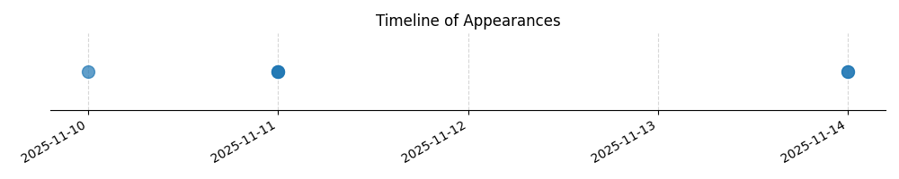

Kategorie: Letecké předpisy
Otázka se týká povinností pilota při provozu na neřízeném letišti, což spadá do oblasti leteckých předpisů (pravidel a postupů pro létání). Možnost B je správná, protože na neřízených letištích je obvykle vyžadována komunikace s AFIS (Airport Flight Information Service) nebo jinou určenou službou pro informování o provozu, aby byla zajištěna bezpečnost. Majitel letiště (A) nemusí nutně poskytovat tyto služby a pravidla vyhýbání (C) platí vždy, ale nejsou specifickou povinností pro přistání/odlet na neřízeném letišti.

| Datum výskytu |
|---|
| 2025-11-14 |
| 2025-11-11 |
| 2025-11-10 |